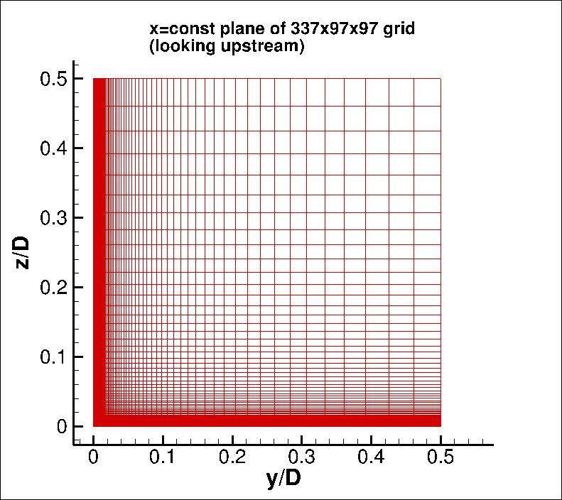

|
Langley Research CenterTurbulence Modeling Resource |
Return to: Turbulence Modeling Resource Home Page
TURBULENCE MODEL NUMERICAL ANALYSIS
Grids - 3D Modified Supersonic Square Duct Case (old)
NOTE: These are older grids (pre-2021). Updated grids can be found at:
Grids - 3D Modified Supersonic Square Duct Case.
The methodology to create a series of 4 nested 3-D grids is provided.
Each coarser grid is exactly every-other-point
of the next finer grid, ranging from 673 x 193 x 193 (fine) to 337 x 97 x 97 (medium) to 169 x 49 x 49 (coarse) to
85 x 25 x 25 (extra-coarse) grid.
The grids are built in nondimensional units, with full duct width D taken to be 1 unit. Due to use of symmetry boundary
conditions, only one quarter of the duct is computed (y and z ranges are from 0 to 0.5).
The finest grid has minimum spacing at the wall of y=8.5 x 10-6, yielding an average minimum y+ of about 0.022.
The grid is stretched in the two wall-normal directions.
The figure below shows a view of one plane of the 337 x 97 x 97 grid.

Note: be sure to use double precision when reading (or writing) the grids!
STRUCTURED VERSIONS OF GRIDS
PLOT3D Files
A simple FORTRAN program
is provided that can be used to generate the 4 grids in PLOT3D format. All information has been hardwired
into the program.
These grids are different from the grids found for the
3D Supersonic Square Duct Validation Case in the following way:
(1) the grid is extended upstream of x=0 (to x=-1.26829), to allow for a small run of symmetry side
wall boundary conditions prior to the start of the duct; (2) the grid size in the y-z plane has been
increased somewhat; and (3) the grid size in the streamwise (x) direction has been decreased
somewhat.
Four structured Y-Z planes are also provided below.
Read these, then write your own program to duplicate the plane as appropriate in the x-direction.
Format for the structured 2D grids is PLOT3D-type, formatted, MG, 2D (nbl=1) - note that you
must use double precision when reading! :
Download the 2-D planar grid sections in PLOT3D format here:
The 193 x 193 plane should be duplicated 673 times (673 planes in x, between x=-1.26829 and x=52 inclusive, with delta x = 0.079268292683.
The 97 x 97 plane should be duplicated 337 times (337 planes in x, between x=-1.26829 and x=52 inclusive, with delta x = 0.158536585366.
The 49 x 49 plane should be duplicated 169 times (169 planes in x, between x=-1.26829 and x=52 inclusive, with delta x = 0.317073170732.
The 25 x 25 plane should be duplicated 85 times (85 planes in x, between x=-1.26829 and x=52 inclusive, with delta x = 0.634146341463.
If desired, example Neutral Map Files
associated with 3-D version of the grids are given here (these files specify grid indices associated
with each boundary condition - see
The Neutral Map File):
CGNS Files
The structured grids are also available as CGNS files (3-D versions only). Note that the BCs written inside the
CGNS files are for guidance only, and may not reflect the appropriate BCs needed for your application.
To read/write CGNS files, (free) software may be necessary if your pre/post-processing tools do not already handle it.
See: CGNS Website for details.
Download the 3-D version of the grids in CGNS format (gzipped) here:
UNSTRUCTURED VERSIONS OF GRIDS
CGNS Files
The unstructured versions of the same grids are all given as CGNS files.
Note that the BCs written inside the CGNS files are for guidance only, and may not reflect
the appropriate BCs needed for your application.
To read/write CGNS files, (free) software
may be necessary if your pre/post-processing tools do not already handle it.
See: CGNS Website for details.
The unstructured grids are all given as hexahedra.
Download the unstructured CGNS grids (gzipped) as 3-D hexahedra here:
AFLR3 Files for FUN3D
The unstructured versions of the same grids are provided here as AFLR3 files for use with
FUN3D. Note that the BCs given in the corresponding .mapbc files are for guidance only, and may not reflect
the appropriate BCs needed for your application. For example, bc type 5000, used here at the
inflow, corresponds to farfield Riemann type.
Download the unstructured AFLR3 grids (gzipped) as 3-D hexahedra here:
Download the corresponding .mapbc files here:
Return to: Turbulence Modeling Resource Home Page
Responsible NASA Official:
Ethan Vogel
read(2,*) nbl
read(2,*) (idim(n),jdim(n),n=1,nbl)
do n=1,nbl
read(2,*) ((y(i,j,n),i=1,idim(n)),j=1,jdim(n)),
+ ((z(i,j,n),i=1,idim(n)),j=1,jdim(n))
enddo
Page Curator:
Clark Pederson
Last Updated: 05/26/2021